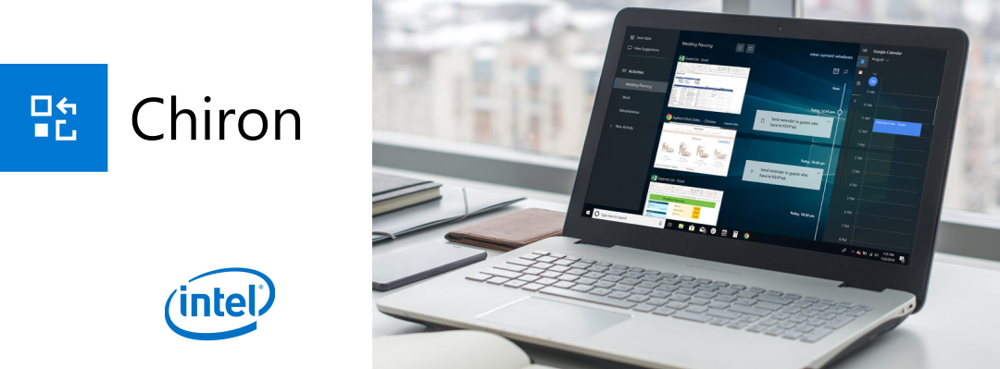

Hey, I'm Javan!
I'm a product designer with a background in HCI and engineering. My focus is in delivering evidence-driven and story-centric design responses.

The story
I began my work term at Uken Games' CloudBreakers team at the beginning of 2016, a team of 15 people in a company of 80 employees. The team consisted of members of all disciplines; products, design, management, and engineers.
When I first joined the team, the game was close to its end of Q1 Alpha release. A core part of why this was an invaluable experience for me was because I had to opportunity to engage in user research and behavior analysis in depth for the first time in my career.
Working at the studio requires you to quickly and elegantly deliver animated and static mocks which illustrate player behavior and interactions with the game. My mentor was instrumental in ensuring that I was exposed to different opportunities and design challenges.
When I first joined the team, the game was close to its end of Q1 Alpha release. A core part of why this was an invaluable experience for me was because I had to opportunity to engage in user research and behavior analysis in depth for the first time in my career.
Working at the studio requires you to quickly and elegantly deliver animated and static mocks which illustrate player behavior and interactions with the game. My mentor was instrumental in ensuring that I was exposed to different opportunities and design challenges.

A typical Friday at Uken.
Design objectives
- Creating a product that provides the player with a pleasant and intuitive experience.
- Designing with accordance to budget and timeline constraints.
- Designing systems that are compatible with past builds and in accordance with game design specifications, while keeping scalability in mind.
- Designing the product with the end user’s satisfaction and needs as the primary motivation.
The process
Over the span of my 4 month work term on CloudBreakers, I took ownership of and completed over 40 tasks large and small. This consisted of major overhauls or brand new designs of 6 major in-game systems (Garage/Crafting, Dossier, Chat, Settings, Profile/Friends, and Mission Briefing), and 12 animated prototypes.
The overhauls and designs usually involved the following steps:
Part of the process for collaborative design is for UX designers to work synergetically with producers, game designers, and developers. A big part of this was thanks to a streamlined workflow.
A large part of the streamlining involved laying groundworks such as establishing style guides and an UI library in both Adobe CC and Sketch.
In this case study I will showcase and explain the steps behind the implementation of the Dossier system.
The overhauls and designs usually involved the following steps:
- Identifying the problem: What exactly are we trying to solve?
- Researching existing solutions: How did other designers solve similar problems?
- Identifying constraints: Will the existing resources allow for the overhauled specs?
- Prototype & usability testing: Let's build it out and get more hands-on with the design!
- Iterating the solution: What is not working, and how do we go about fixing it?
Part of the process for collaborative design is for UX designers to work synergetically with producers, game designers, and developers. A big part of this was thanks to a streamlined workflow.
A large part of the streamlining involved laying groundworks such as establishing style guides and an UI library in both Adobe CC and Sketch.
In this case study I will showcase and explain the steps behind the implementation of the Dossier system.
Options explored
Before I jumped into putting ideas and images onto Sketch, a brainstorming session was held with my mentor as well as the game designer to set expectations for what the system would entail, as well as defining the requirements of the design. In this specific case, the Dossier is used to showcase player progression by tracking their achievements and unlockables in the game.
 After decision on a general direction and understanding what the player expectations are, explorations on the different ways of executing on the requirements took place using low to mid fidelity mocks. These mocks are drafted up quickly using placeholder images and grayscale colours to prioritize speed over form.
After decision on a general direction and understanding what the player expectations are, explorations on the different ways of executing on the requirements took place using low to mid fidelity mocks. These mocks are drafted up quickly using placeholder images and grayscale colours to prioritize speed over form.
 Ultimately a decision was made to eliminate all but one of the candidates from the low fidelity mocks. The column based representation of the achievements proved to satisfy our design needs the best. The rationale for this is because it is unlikely that there would be more than 5 achievement categories for the players to track. By displaying all of the achievement progresses in a horizontal fashion, the player is presented with all of the key information they need. It was deemed unnecessary to have an "detailed view" for each achievement category since the information presented in the details panel is repetitive.
Ultimately a decision was made to eliminate all but one of the candidates from the low fidelity mocks. The column based representation of the achievements proved to satisfy our design needs the best. The rationale for this is because it is unlikely that there would be more than 5 achievement categories for the players to track. By displaying all of the achievement progresses in a horizontal fashion, the player is presented with all of the key information they need. It was deemed unnecessary to have an "detailed view" for each achievement category since the information presented in the details panel is repetitive.
From pen and paper to Sketch.

TL: Overworld Nameplate. TR: Dossier Overview Interface. BL: Player Profile Arena Information. BR: Crafting Interface.
User testing
Luckily my work term coincided with the Alpha playtest of CloudBreakers. The UX team had concerns in some of the general game design and gameplay directions. But in order to make our arguments more concrete we required validation in the form of external user feedback.
Flinto and Zeplin were used to do the heavy lifting, these tools vastly improve the speed at which the team was able to complete and collaborate on tasks. Flinto allowed us to quickly build out interactive (90% functional) prototypes extremely quickly, with full featured workflows and animations. Zeplin streamlined the transition from design to engineering by turning mockups into interactive design specs, enabling developers to generate assets and style code directly.
The game had previously had a number of internal playtests, but the feedback received usually tends to be biased in a neutrally positive light (asking your friends and coworkers to critically and harshly evaluate your designs won't always prove to be the most productive, due to politics).
The UX team suggested that a closed beta would provide valuable user feedback for the studio. The playtest was designed in the form of a Longitudinal Diary user studies, and over 50 users participated in the playtest.
TypeForm.com was used to produce the playtest diary questions, and we enlisted help from UserTesting.com for feedback in the form user-emotion and user-behaviour videos (along with gesture recordings).
I was also granted the opportunity to speak in person with some of our users. What was especially valuable for me in this experience was being able to digest and dissect their comments from both a logical and emotional standpoint.
 I won’t go into too much details into the results of the playtest, but I could say that it was immensely helpful in helping us consolidating the game and identifying what works and what needs adjustments.
I won’t go into too much details into the results of the playtest, but I could say that it was immensely helpful in helping us consolidating the game and identifying what works and what needs adjustments.
One major takeaway I learned from this exercise is the practice of empathy - putting myself in the user’s mindset and REALLY, I mean REALLY, understanding the user’s frustrations first-hand. A significant challenge I encountered during this exercise was to remove personal bias when reading into an user’s responses and behaviour. Stopping oneself from injecting their own narrative when analyzing the user feedback is especially important.
Flinto and Zeplin were used to do the heavy lifting, these tools vastly improve the speed at which the team was able to complete and collaborate on tasks. Flinto allowed us to quickly build out interactive (90% functional) prototypes extremely quickly, with full featured workflows and animations. Zeplin streamlined the transition from design to engineering by turning mockups into interactive design specs, enabling developers to generate assets and style code directly.
In this case Zeplin helps bridge the gap between developers and designers. Fully automating the hand-off process.
The UX team suggested that a closed beta would provide valuable user feedback for the studio. The playtest was designed in the form of a Longitudinal Diary user studies, and over 50 users participated in the playtest.
The massive spreadsheet of all the gathered user feedback. Over 50 users participated, and over 170 responses were recorded.
I was also granted the opportunity to speak in person with some of our users. What was especially valuable for me in this experience was being able to digest and dissect their comments from both a logical and emotional standpoint.
We broke down the data so we could correlate commonalities between the participants before presenting the findings to the entire team.
One major takeaway I learned from this exercise is the practice of empathy - putting myself in the user’s mindset and REALLY, I mean REALLY, understanding the user’s frustrations first-hand. A significant challenge I encountered during this exercise was to remove personal bias when reading into an user’s responses and behaviour. Stopping oneself from injecting their own narrative when analyzing the user feedback is especially important.
Sample animation proof of concept for the evolution cinematics.
Design challenges
One of the core concepts of UX design requires the system designed to be as intuitive as possible, with minimal thinking required on the user’s part when navigating through the interface and interactions.
Keeping these core ideas in mind, the designs needed to be simple to use, simple in implementation, potentially scalable and also delivered in a timely fashion due to the pressing budget and timeline.
On a few occasions, the game design and UX design team would come into disagreement with the direction or the implementation of certain features.
Under these circumstances what usually ended up happening were collaborative brainstorm sessions. The teams would dissect the problem at its roots, and the points of discussion usually revolved around why a specification or implementation is necessary and whether it will bring value to the end users.
In some ways UX and game designers are almost like fire and ice — game design usually wants complex game mechanics that increases the amount of meaningful decisions the players are able to make (the more stats the better, the more options the better); whereas UX designers work with the fundamental principle of reducing cognitive load by simplifying game experiences.
One major issue that I often ran into was the consideration for the scope of designs. Often times the designed systems are rendered obsolete by existing specs, and major audits are needed. The challenge in these situations would be to always consider the timeline, and finding a solution that is optimized for UX, game design, and development resources. Sometimes this would mean settling for a "budgeted" design, but that's okay. Because sometimes the "best" UX solution is too expensive to implement. Finding the sweet spot in what works for all disciplines involved requires a delicate balance.
Keeping these core ideas in mind, the designs needed to be simple to use, simple in implementation, potentially scalable and also delivered in a timely fashion due to the pressing budget and timeline.
On a few occasions, the game design and UX design team would come into disagreement with the direction or the implementation of certain features.
Under these circumstances what usually ended up happening were collaborative brainstorm sessions. The teams would dissect the problem at its roots, and the points of discussion usually revolved around why a specification or implementation is necessary and whether it will bring value to the end users.
In some ways UX and game designers are almost like fire and ice — game design usually wants complex game mechanics that increases the amount of meaningful decisions the players are able to make (the more stats the better, the more options the better); whereas UX designers work with the fundamental principle of reducing cognitive load by simplifying game experiences.
One major issue that I often ran into was the consideration for the scope of designs. Often times the designed systems are rendered obsolete by existing specs, and major audits are needed. The challenge in these situations would be to always consider the timeline, and finding a solution that is optimized for UX, game design, and development resources. Sometimes this would mean settling for a "budgeted" design, but that's okay. Because sometimes the "best" UX solution is too expensive to implement. Finding the sweet spot in what works for all disciplines involved requires a delicate balance.
The takeaway
After having been exposed to user testing and research methodologies in such intensity for the first time, I could confidently say that I'm much more comfortable designing and conducting user tests.
It was also interesting because this was my first time working with a games studio. Due to Uken's team structures, I learned that smaller game studios tend to operate in a way that's very similar to agile startups, and similar problems are always encountered. Despite the challenges and problems we faced, I could say that I'm definitely more interested in games development as a whole, and will be looking for opportunities to work with games studios in the future.
Big shoutouts to the CloudBreakers team for having so much faith in me! Especially to my mentor/good friend/supervisor Brian Lin, thank you for the advice you've gave me in all aspects of life. Whether it was over coffee, one-on-ones, or beer, there's always valuable to takeaway from our conversations.
Uken definitely was an amazing experience for me, tons of talented individuals. I'm definitely interested in how the company will develop moving forward.
It was also interesting because this was my first time working with a games studio. Due to Uken's team structures, I learned that smaller game studios tend to operate in a way that's very similar to agile startups, and similar problems are always encountered. Despite the challenges and problems we faced, I could say that I'm definitely more interested in games development as a whole, and will be looking for opportunities to work with games studios in the future.
Big shoutouts to the CloudBreakers team for having so much faith in me! Especially to my mentor/good friend/supervisor Brian Lin, thank you for the advice you've gave me in all aspects of life. Whether it was over coffee, one-on-ones, or beer, there's always valuable to takeaway from our conversations.
Uken definitely was an amazing experience for me, tons of talented individuals. I'm definitely interested in how the company will develop moving forward.
Tools used
- Vector graphics are edited using Adobe Illustrator
- High fidelity mocks done using Adobe Photoshop
- Low fidelity mocks done using Sketch
- Animations done in Adobe AfterEffects
- Prototyping done using Flinto
- Hand-off process performed in Zeplin

The Story
I had the opportunity to work with Roadmunk for the summer of 2015. Roadmunk is a highly talented and focused start-up based in downtown Toronto.
Roadmunk is an enterprise SaaS platform that enables product managers and their teams to communicate strategic roadmaps to shareholders and their organization. At its core, Roadmunk is a roadmap visualization web application.
I completed a variety of tasks for Roadmunk, from graphics, branding, web development, to product design. I was instrumental in ensuring the product’s success during the four months that I worked there.
Roadmunk is an enterprise SaaS platform that enables product managers and their teams to communicate strategic roadmaps to shareholders and their organization. At its core, Roadmunk is a roadmap visualization web application.
I completed a variety of tasks for Roadmunk, from graphics, branding, web development, to product design. I was instrumental in ensuring the product’s success during the four months that I worked there.

Application UX / Product Design
Roadmunk’s core mission objective was to deliver a pleasant user experience, and design for the path of least resistance. Users should get the job done with minimal conscious effort. All of Roadmunk's designs holds true to these three core philosophies.
Here are some features that I worked on during my time at Roadmunk.
3 Click Mentality
Trying to design so that every option is less than 3 clicks away. Hovers and drags count as half clicks. Keep track of the design and try to minimize the distance. The routes should be as direct as possible.Reducing Cognitive Load
Cognitive-load is the mental strain required at any given time to process what the information/accomplish tasks. The objective is to try to reduce it as much as we can, so we can give emphasis to the roadmap info users add.Tactful Transitions
Transitions are used throughout the app. Hover over any clickable div and see this effect. The rationale behind this was to make the user feel more in tune and have a pleasant feeling navigating around the app.Here are some features that I worked on during my time at Roadmunk.

Weekly planning allows product managers to create sprint-oriented roadmaps.

Reviewer mode allows users to share strategic roadmaps directly with stakeholders and other team members.

Roadmunk registration page was redesigned for a more modern feel.
Branding Strategy
The branding strategy makes use of a trio of upbeat and bright colors from the orange, blue and green palettes. These mature tones were used to strike a balance between Roadmunk’s roots in a technology start-up and the product’s purpose as an enterprise service platform.

Business cards made use of the classic Roadmunk orange for a vibrant entrepreneurial feel.

The Roadmunk documentation theme makes use of the different tones in the Roadmunk orange palette.
Website Redesign
Roadmunk has a keen focus on delivering a slick interface and user experience to its customers. The website needed to evolve to match this criteria. The redesign’s goal aimed for a new webpage that communicated the company’s core values and delighted its customers.
Friendly and upbeat colours are used throughout the website. View it live at roadmunk.com/features.
Friendly and upbeat colours are used throughout the website. View it live at roadmunk.com/features.

A brand new features page redesign after Reviewer mode and weekly planning functionalities were launched.
Tools Used
- Vector graphics and icons are created using Adobe Illustrator
- High fidelity mocks and graphics created using Adobe Photoshop
- Mockup process created using UXPin
- HTML/CSS for frontend development
This page is still a work in progress.
Come back later for new updates!

This page is still a work in progress.
Come back later for new updates!
The Situation
Intel came to us with the problem statement of improving personal productivity.
Objective
Create a desktop solution that helps self-employed individuals with context management.
Final product video
Full product video on Youtube.
Tools Used
- Figma for design
- Keynote for slide deck
- AfterEffects for video production
- Product animation done using Keynote

Heya! I’m Javan!
I am a product designer who has been practicing UX since early 2014. My focus is in helping teams create evidence-driven design responses through storytelling. I firmly believe the best works are born as the collective contribution of groups. Currently I hold a Master's degree in HCI and Design, and a B. of Applied Sciences (B. of Engineering).
Previously worked on a design research team with Microsoft Hololens, and design prototype team from Intel. During my undergrad, I completed design internship placements at Noom Inc, Uken Games, and INTERSECT.
Let's chat!
Previously worked on a design research team with Microsoft Hololens, and design prototype team from Intel. During my undergrad, I completed design internship placements at Noom Inc, Uken Games, and INTERSECT.
Let's chat!
Skills
User experience design
Design ethnographic research
Usability testing
Frontend development
Interaction design
Rapid prototyping
Tools
Sketch
Figma
Photoshop
AfterEffects
Premiere
InVision / Marvel / Flinto
Hobbies & Interests
Vector illustrations
Homecooking
Tabletop RPGs
Video games